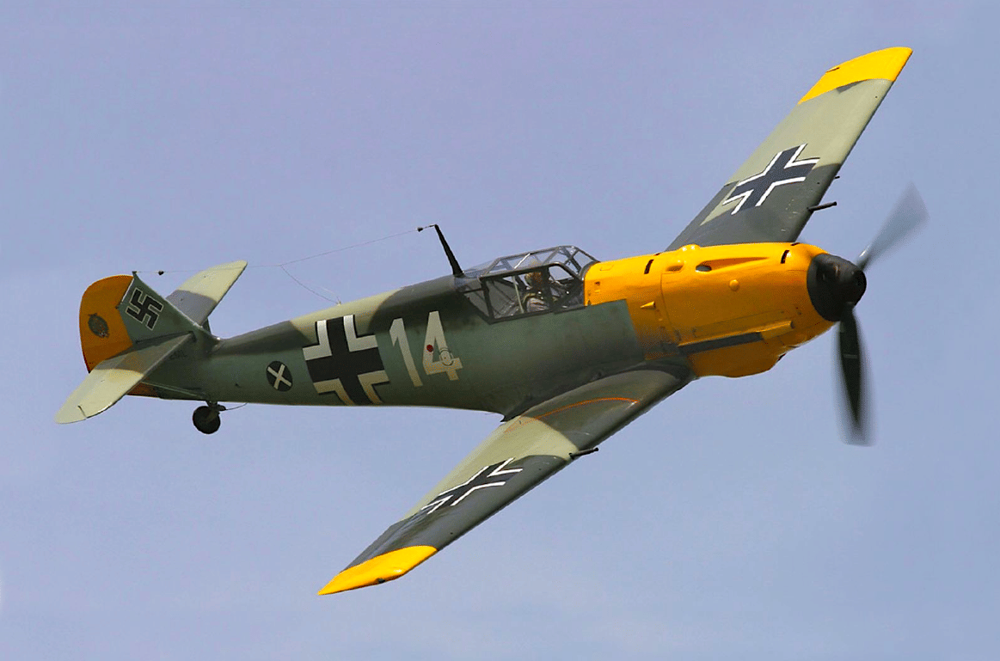

Hurricane Hawker
Hurricane Hawker
Messerschmitt Bf-109 Mitsubishi A6M Zero
Mitsubishi A6M Zero Inicio
Inicio Supermarine SpitfireJunkers Ju 87G-1 Stuka
Supermarine SpitfireJunkers Ju 87G-1 Stuka
PlayStation (プレイステーション Pureisutēshon?, tdl. «Estación de juego»), oficialmente abreviada como PS o PSone, es la primera videoconsola de sobremesa descontinuada producida por Sony Computer Entertainment. Fue lanzada en Japón el 3 de diciembre de 1994,[8] en América del Norte el 9 de septiembre de 1995, en Europa el 29 de septiembre de 1995 y en Australia el 15 de noviembre de 1995. Como consola de quinta generación, PlayStation compitió principalmente con Nintendo 64, el Sega Saturn y la Sega Dreamcast.
Sony comenzó a desarrollar la PlayStation después de un acuerdo fallido con Nintendo para crear un periférico de CD-ROM para Super Nintendo Entertainment System a principios de la década de 1990. La consola fue diseñada principalmente por Ken Kutaragi y Sony Computer Entertainment en Japón, mientras que el desarrollo adicional se subcontrató en el Reino Unido. Se puso énfasis en los gráficos de polígonos en tercera dimensión al frente del diseño de la consola. La producción de juegos de PlayStation fue diseñada para ser optimizada e inclusiva, atrayendo el apoyo de muchos desarrolladores externos.
La consola resultó popular por su extensa biblioteca de juegos, franquicias populares, un precio competitivo y marketing juvenil agresivo que la anunciaba como la consola preferible para adolescentes y adultos. Las franquicias Premier de PlayStation incluyeron Gran Turismo, Wipeout, Crash Bandicoot, Spyro, Tomb Raider, Resident Evil, Metal Gear Solid, Tekken, y Final Fantasy, todas las cuales generaron numerosas secuelas. Los juegos de PlayStation continuaron vendiéndose hasta que Sony cesó la producción de PlayStation y sus juegos el 23 de marzo de 2006, más de once años después de su lanzamiento y menos de un año antes del debut de PlayStation 3.[9] Se lanzaron un total de 3 061 juegos de PlayStation, con ventas acumuladas de 967 millones de unidades.
La PlayStation marcó el ascenso de Sony al poder en la industria de los videojuegos. Recibió elogios y se vendió con fuerza; en menos de una década, se convirtió en la primera plataforma de entretenimiento informático en comercializar más de 100 millones de unidades.[10] Su uso de discos compactos anunció la transición de la industria de los juegos de los cartuchos. El éxito de la PlayStation llevó a una línea de sucesores, comenzando con PlayStation 2 en 2000. En el mismo año, Sony lanzó un modelo más pequeño y económico, PSOne.
Fuente: Wikipedia
| Hurricane Hawker |
 Messerschmitt Bf-109 |
Mitsubishi A6M Zero |
| Inicio |
Supermarine Spitfire |
Junkers Ju 87G-1 Stuka |